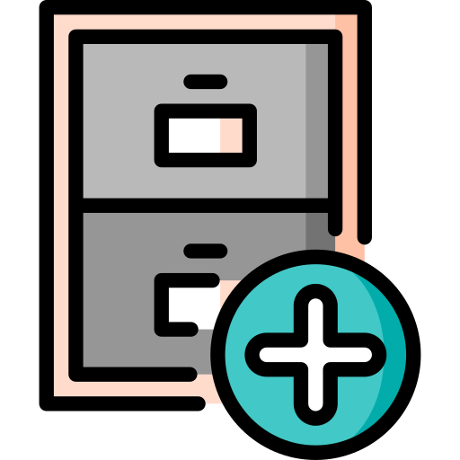

Get the latest stable release of Pinta for a reliable and polished experience. This version has been tested and is recommended for everyday use. Stay up to date with new features, improvements, and bug fixes by downloading the latest release for your platform.
-

-
 Windows Download
Windows Download -
macOS Download
-

Tarball Download
-
Zip File Download
-
OpenBSD Setup Guide
-
GitHub Source Code